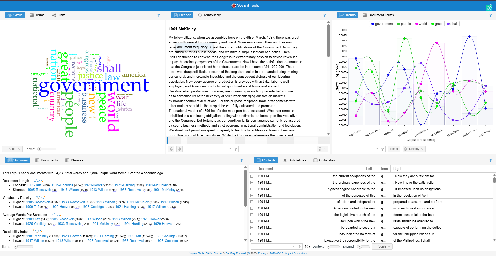
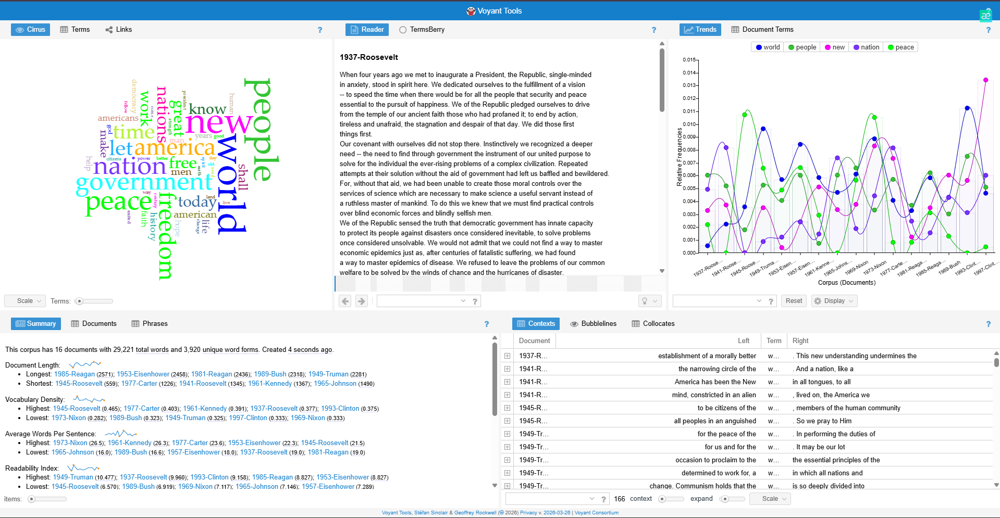

I compared two groups of U.S. presidential speeches. The first group includes earlier presidents, and the second group includes more modern presidents.


Both groups use words like "people" and "nation." Earlier speeches use more formal words like "shall," while modern speeches include words like "world" and "freedom."
This shows how language changes over time and how modern communication is more direct and accessible.